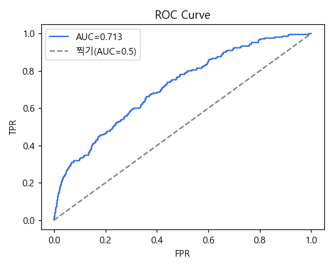
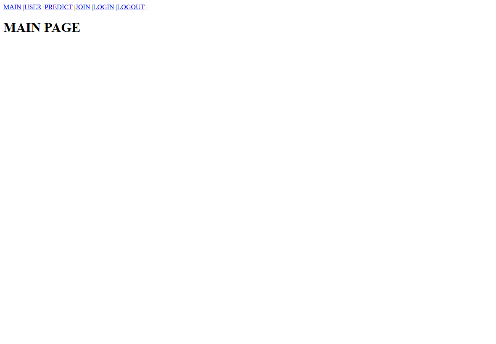
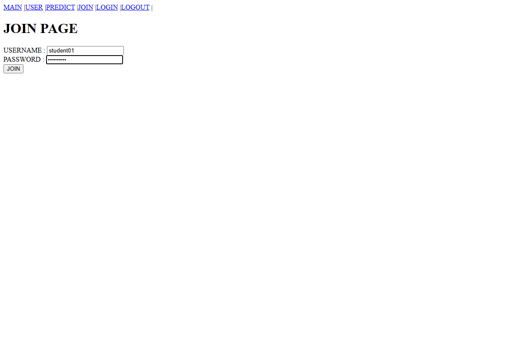
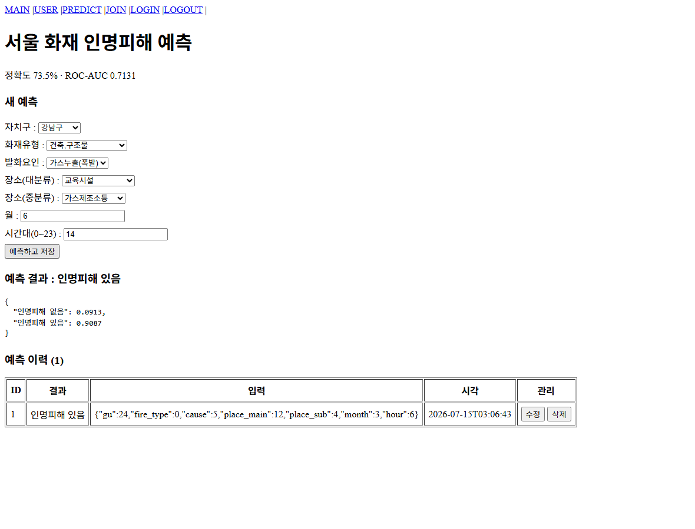
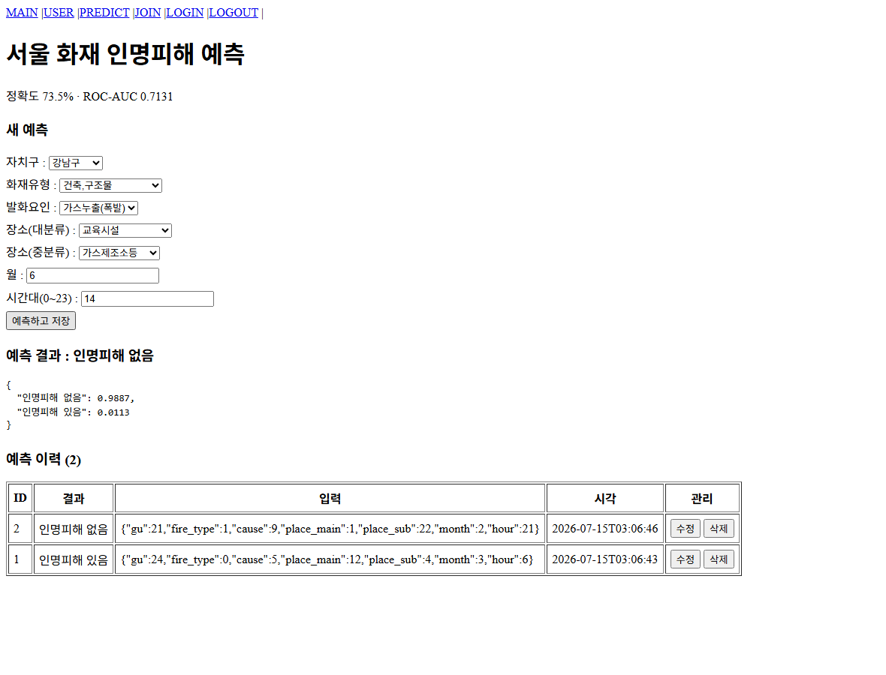
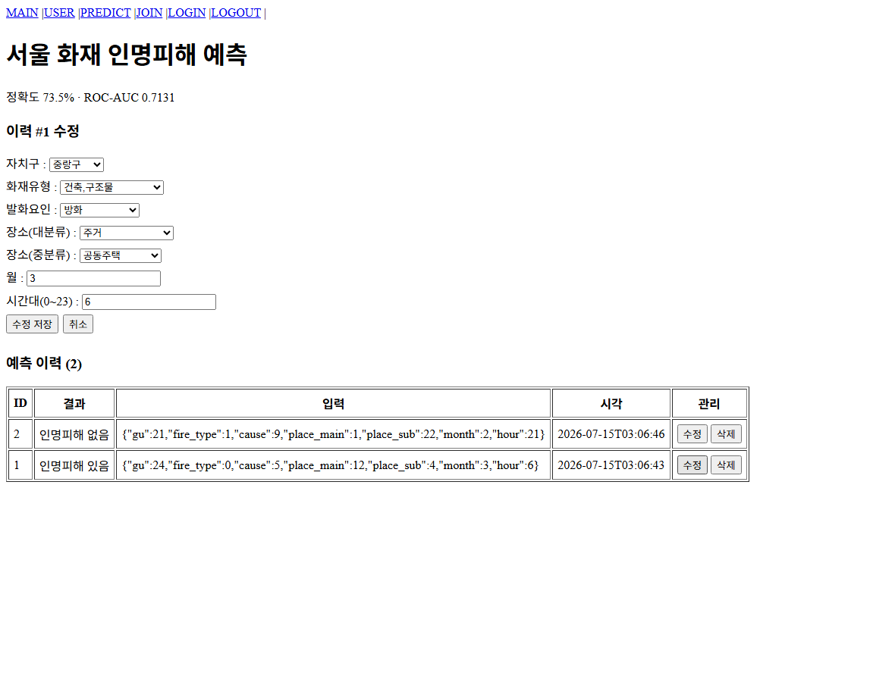
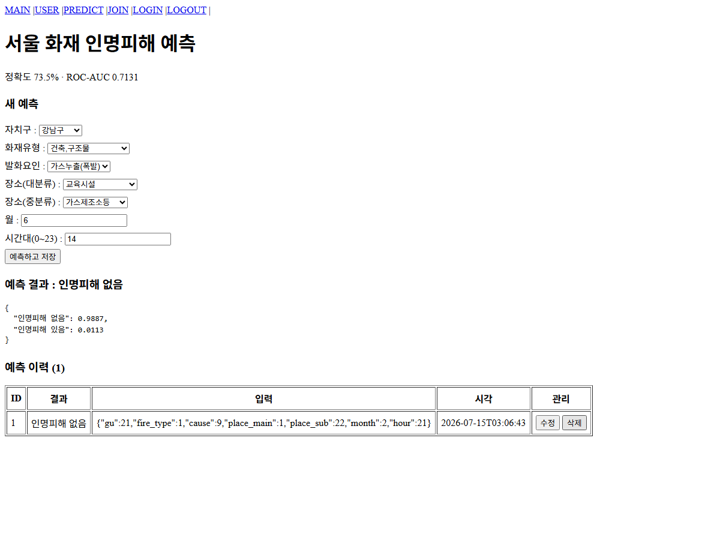

공공데이터를 활용한 예측 서비스 구축
공공데이터포털의 CSV 한 건을 받아 모델 학습 → API 서비스 → 풀스택 통합까지 완성한다.
과제 개요
여러분은 공공데이터를 활용해 예측 서비스를 만드는 개발자입니다. 공공데이터포털에서 데이터를 받아 이진분류 모델을 학습시키고, 그 모델을 API로 서비스한 뒤, 로그인이 필요한 웹 서비스에 통합해야 합니다.
예측 결과는 DB에 이력으로 남아야 하고, 사용자는 화면에서 조회·수정·삭제할 수 있어야 합니다.
브라우저에서 회원가입·로그인 → 입력 폼에 값을 넣고 예측하고 저장 → 결과와 확률이 표시되고 이력 표에 쌓임 → 수정·삭제 가능.
데이터 흐름: 브라우저(FN) → Spring Boot(BN, 인증·중계) → FastAPI(ML) → model.pkl
만들 것 — 폴더 3개
| 폴더 | 역할 | 산출물 |
|---|---|---|
| 01 | 모델 학습 (주피터) | 모델학습.ipynb → model.pkl, feature_spec.json |
| 02 | ML API (FastAPI) | main.py, model.py, store.py, Dockerfile |
| 03 | 풀스택 (docker compose) | 템플릿 + PredictionController.java, Predict.jsx |
1. 데이터는 공공데이터포털(data.go.kr) 에서 받은 CSV 여야 하고, 출처를 명시한다.
2. 타겟은 이진분류(두 가지 답)여야 한다.
3. 03의 인증(회원가입·로그인) 코드는 템플릿 그대로 쓴다. 여러분이 만들 것은 ML 연결 부분이다.
4. 예측 이력 CRUD(생성·조회·수정·삭제) 가 화면에서 모두 동작해야 한다.
사용 데이터 — 예시(SAMPLE_1)의 경우
데이터 출처: 공공데이터포털 > 소방청_화재발생 정보 (data.go.kr/data/15044003)
| 항목 | 내용 |
|---|---|
| 데이터 | 소방청_화재발생 정보 (전국 191,510건 중 서울 26,760건) |
| 타겟 | 인명피해 여부 — 사망·부상이 1명이라도 있으면 1 (전체의 3.9%) |
| 입력(7개) | 자치구 · 화재유형 · 발화요인 · 장소(대/중) · 월 · 시간대 |
| 성능 | 정확도 0.7347 · ROC-AUC 0.7131 |
행 단위 데이터(한 줄 = 한 사건/한 건)를 고르십시오. 통계·집계 데이터는 학습할 수 없습니다.
타겟이 데이터에 이미 있으면 좋고(적합/부적합, 사고 유무 등), 없으면 연속값을 중앙값으로 잘라 만들어도 됩니다.
작업 지시
101 — 모델 학습
주피터 노트북으로 표준 워크플로우 8단계를 작성하고, 마지막에 model.pkl 과 feature_spec.json 을 02 폴더에 저장하시오.
기본 코드 — 이 뼈대를 지킬 것
df = pd.read_csv('data/파일명.csv', encoding='cp949') # 공공데이터는 대부분 cp949
plt.rcParams['font.family'] = 'Malgun Gothic' # 그래프 한글 깨짐 방지
TARGET = '인명피해여부'
LABELS = ['인명피해 없음', '인명피해 있음']
df[TARGET] = (pd.to_numeric(df['인명피해(명)소계'], errors='coerce').fillna(0) > 0).astype(int)
중요 코드 ① — 피처 정의 (가장 중요)
feature_spec.json 하나가 02의 API 문서와 03의 입력 화면을 자동으로 만듭니다. 이 구조를 반드시 지키십시오.
# 코드 열 이름은 영문으로! 이 이름이 그대로 API 의 JSON 키가 된다. # 한글 키로 만들면 윈도우 터미널에서 curl 로 보낼 때 인코딩이 깨진다. CODE = {'시군구': 'gu', '화재유형': 'fire_type', '발화요인대분류': 'cause', '장소대분류': 'place_main', '장소중분류': 'place_sub'} OPTIONS = {} for c in CATS: OPTIONS[c] = sorted(df[c].unique()) df[CODE[c]] = df[c].map({v: i for i, v in enumerate(OPTIONS[c])}) FEATURES = [ {'name': 'gu', 'label': '자치구', 'kind': 'cat', 'options': OPTIONS['시군구']}, {'name': 'month','label': '월', 'kind': 'num'}, # name=기계가 쓰는 영문 이름 / label=화면에 보이는 한글 / kind=cat(선택) 또는 num(숫자) ]
kind 가 cat 이면 03 화면에 드롭다운, num 이면 숫자 입력칸이 자동으로 생깁니다.
options 의 순서가 곧 코드 번호입니다(0,1,2...). 학습할 때의 순서와 서빙할 때의 순서가 반드시 같아야 하므로 그대로 저장합니다.
중요 코드 ② — 누수 방지
# 타겟 그 자체(사망·부상)와 사후 결과값(재산피해)은 입력에서 반드시 뺀다 # 남길 것: 예측 시점에 알 수 있는 정보뿐
정답을 입력에 넣으면 ROC-AUC 가 0.99 로 치솟습니다. 성능이 너무 좋으면 의심하십시오.
중요 코드 ③ — 불균형 대응 · 저장
model = RandomForestClassifier(n_estimators=100, max_depth=8, random_state=42,
n_jobs=-1, class_weight='balanced') # 불균형이면 필수
joblib.dump(model, '../02/model.pkl')
json.dump(spec, open('../02/feature_spec.json','w',encoding='utf-8'), ensure_ascii=False, indent=2)
# 이 버전이 02/requirements.txt 와 같아야 서버가 뜬다
print('numpy', np.__version__, '| sklearn', sklearn.__version__)
불균형(양성이 적음)이면 정확도는 착시입니다. ROC-AUC 와 소수 클래스 recall 을 보고, class_weight='balanced' 를 쓰십시오.
균형(50:50)이면 정확도가 유효하고 class_weight 는 필요 없습니다. 처방은 데이터를 보고 정합니다.
202 — ML API (FastAPI)
model.pkl 을 REST API 로 서비스하고, 예측 이력 CRUD 를 만드시오. 포트는 8001.
| 파일 | 만들 내용 |
|---|---|
model.py | pkl 로드 · 예측 함수 |
main.py | 엔드포인트 8개 (health/spec/predict + CRUD 5) |
store.py | SQLite 이력 저장소 |
requirements.txt | ASCII 만 — 한글 주석을 넣으면 pip 가 죽는다 |
기본 코드 — model.py (가장 안쪽부터)
def load_model(path="model.pkl"):
return joblib.load(path)
def predict(model, input_data):
df = pd.DataFrame([input_data]) # dict 하나 -> 1행짜리 표
return model.predict(df)[0], model.predict_proba(df)[0]
중요 코드 ① — 시작 시 1회 로드
spec = json.load(open("feature_spec.json", encoding="utf-8"))
model = load_model("model.pkl") # 요청마다 읽으면 느리다
LABELS = spec["target_labels"]
app = FastAPI(title=spec["title"] + " ML API")
app.add_middleware(CORSMiddleware, allow_origins=["*"],
allow_methods=["*"], allow_headers=["*"]) # React 가 부를 수 있게
store.init_db()
중요 코드 ② — 예측 로직은 한 곳에
def run_model(features):
pred, proba = predict(model, features)
pred = int(pred) # numpy 타입은 JSON 변환 불가!
return {"prediction": pred, "label": LABELS[pred],
"proba": {LABELS[0]: round(float(proba[0]),4),
LABELS[1]: round(float(proba[1]),4)}}
@app.post("/predict") # 예측만 (03 의 BN 이 호출)
def do_predict(req: PredictRequest):
return run_model(req.features)
/predict·POST /predictions·PUT /predictions/{id} 세 곳이 예측을 합니다. 복사해 두면 한 곳만 고치고 나머지를 빠뜨립니다.
중요 코드 ③ — CRUD 와 404
@app.post("/predictions", status_code=201) # C : 생성은 201
def create_prediction(req: PredictRequest):
return store.create(req.features, run_model(req.features))
@app.put("/predictions/{pid}") # U : 값만 바꾸는 게 아니라 다시 예측!
def update_prediction(pid: int, req: PredictRequest):
row = store.update(pid, req.features, run_model(req.features))
if row is None:
raise HTTPException(status_code=404, detail="해당 예측 이력이 없습니다")
return row
numpy 타입: int()·float() 변환을 빠뜨리면 Object of type int64 is not JSON serializable.
Dockerfile: --host 0.0.0.0 이어야 컨테이너 밖에서 접속됩니다.
버전: requirements.txt 가 01의 학습 환경과 다르면 ModuleNotFoundError 로 서버가 안 뜹니다.
303 — 풀스택 통합
인증이 완성된 템플릿(03_DOCKER_COMPOSE)을 복사해 오고, ML 연결 코드만 추가하시오. 인증 코드는 건드리지 않는다.
| 순서 | 파일 | 구분 |
|---|---|---|
| 1·2 | docker-compose.yml | 수정 — ml 서비스 · ML_URL |
| 3 | BN/.../PredictionController.java | 신규 |
| 4 | FN/src/components/Predict.jsx | 신규 |
| 5 | FN/src/App.js | 수정 (3줄) |
중요 코드 ① — compose 에 ML 붙이기
ml:
build:
context: ../02 # 02 폴더를 그대로 이미지로
container_name: ml-container
ports: ["8001:8001"]
bn:
environment:
ML_URL: http://ml-container:8001 # localhost 아님! 컨테이너 이름이 주소
depends_on:
ml: { condition: service_started }
ML_URL 을 localhost 로 쓰면 컨테이너 자신을 가리켜 ML 을 못 찾습니다.
중요 코드 ② — BN 은 중계만 한다
@Value("${ml.url:http://ml-container:8001}") # compose 의 ML_URL 이 주입됨
private String mlUrl;
private ResponseEntity<String> forward(HttpMethod method, String path, Object body) {
try {
return rt.exchange(mlUrl + path, method, request, String.class);
} catch (HttpStatusCodeException e) {
return ResponseEntity.status(e.getStatusCode()) # ML 의 404 를 그대로 전달
.contentType(MediaType.APPLICATION_JSON)
.body(e.getResponseBodyAsString());
}
}
private Map<String,Object> wrap(Map<String,Object> f) { # FN 은 features 만 보냄
Map<String,Object> b = new HashMap<>(); b.put("features", f); return b;
}
1) 형태 맞추기(wrap) — FN 의 features 를 ML 이 원하는 {"features":{...}} 로.
2) 상태코드 전달(try/catch) — 안 잡으면 ML 의 404 가 500 으로 뭉개져 원인을 알 수 없습니다.
예측은 직접 하지 않습니다. 경로를 /api/** 로 만들면 템플릿의 SecurityConfig 가 자동으로 로그인을 요구합니다.
중요 코드 ③ — 화면은 spec 을 보고 그린다
useEffect(() => { api.get("/api/spec").then(r => { setSpec(r.data); ... }) }, []);
{spec.features.map((f) => (
f.kind === "num"
? <input type="number" value={vals[f.name]} .../>
: <select value={vals[f.name]} ...>
{f.options.map((o,i) => <option key={i} value={i}>{o}</option>)}
</select>
))}
입력칸을 코드에 적어두지 않습니다. /api/spec 응답을 보고 그립니다. value={i} — 이름이 아니라 인덱스 번호를 보냅니다.
그래서 01에서 피처를 바꿔 다시 학습하면 화면이 저절로 바뀝니다. React 코드는 한 줄도 안 고쳐도 됩니다.
단계별 확인 방법
| 단계 | 확인 명령 |
|---|---|
| 1·2 | docker compose up ml → curl localhost:8001/health |
| 3 | cd BN && ./gradlew compileJava → BUILD SUCCESSFUL |
| 4·5 | cd FN && npm run build → Compiled successfully |
| 전체 | docker compose up --build → 컨테이너 5개 Up |
실행화면 (예시 — SAMPLE_1 완성본)
아래는 SAMPLE_1 을 실제로 실행해 캡처한 화면입니다. 여러분의 결과물도 같은 흐름이어야 합니다(데이터가 다르니 항목·수치는 다릅니다).
01 실행화면 — 모델 학습
타겟 분포 (2단계 EDA)

인명피해 없음 25,709 vs 있음 1,051 — 3.9% 의 심한 불균형. 이 그래프를 보고 class_weight='balanced' 를 쓰기로 결정합니다.
ROC 곡선 (7단계 평가)

대각선(찍기, AUC 0.5)보다 위로 볼록해야 모델이 일을 한 것입니다. AUC 0.713. 불균형이라 정확도(0.7347)가 아니라 이 값을 봅니다.
02 실행화면 — ML API
Swagger 자동 문서 (localhost:8001/docs)

엔드포인트 8개가 보입니다 — /health, /spec, /predict + CRUD 5개(POST/GET/GET/PUT/DELETE /predictions).
이 문서는 우리가 만들지 않았습니다. 데코레이터와 PredictRequest 에서 자동 생성된 것입니다. Try it out 으로 직접 실행해 볼 수 있습니다.
03 실행화면 — 풀스택
1) 메인 (localhost:3000)

상단에 PREDICT 메뉴가 보이면 App.js 수정(5단계)이 반영된 것입니다.
2) 회원가입 · 3) 로그인


로그인하지 않으면 예측이 되지 않습니다. 템플릿의 SecurityConfig 가 /api/** 를 보호하기 때문입니다. 회원 정보는 MySQL 에 저장됩니다.
4) 예측 폼 — 자동 생성

제목 "서울 화재 인명피해 예측", 정확도 73.5% · ROC-AUC 0.7131 이 모두 feature_spec.json 에서 온 것입니다.
입력칸 7개 — 드롭다운 5(자치구·화재유형·발화요인·장소 대/중) + 숫자 2(월·시간대). React 코드에 하드코딩된 게 아니라 spec 을 보고 그린 것입니다.
5) 예측 결과 — 고위험 (C: 예측하고 저장)

중랑구 · 건축,구조물 · 방화 · 주거/공동주택 · 3월 · 새벽 6시 → 인명피해 있음 0.9087
새벽에 사람이 자고 있는 주거지 방화 — 데이터상 방화는 인명피해율 20.1%(평균 3.9%의 5배), 새벽 5시는 8.5%입니다. 모델이 근거 있는 판단을 합니다.
6) 예측 결과 — 저위험 + 이력 표 (R)

은평구 · 기타(쓰레기 화재등) · 전기적 요인 · 기타/야외 · 2월 · 21시 → 인명피해 없음 0.9887
같은 모델이 상황에 따라 91% ↔ 1% 로 완전히 다르게 답합니다. 야외 쓰레기 화재는 인명피해율 0.6%입니다.
아래 예측 이력 (2) 표에 ID·결과·입력·시각·관리(수정/삭제)가 쌓였습니다. 새로고침해도 남습니다 — ML 컨테이너의 SQLite 에 저장됐기 때문입니다.
7) 수정 모드 (U)

이력의 [수정] 을 누르면 제목이 "이력 #1 수정" 으로 바뀌고 그 입력이 폼에 채워집니다.
8) 수정 후 — 라벨이 뒤집힌다

고위험 이력을 저위험 값으로 바꿔 저장하니 결과가 "있음" → "없음" 으로 바뀌었습니다. 값만 덮어쓴 게 아니라 새 입력으로 다시 예측했기 때문입니다(02 의 update_prediction 이 run_model 을 재호출).
9) 삭제 후 (D)

2건 → 1건. 삭제 후 목록을 다시 불러옵니다. 이것으로 C·R·U·D 네 가지를 화면에서 모두 확인했습니다.
제출물
| 번호 | 항목 | 내용 |
|---|---|---|
| 1 | 01 / 02 / 03 폴더 | 완성된 소스 전체 (model.pkl·feature_spec.json 포함) |
| 2 | 결과보고서 | 데이터 출처·품질 진단·모델 성능·API 설계·통합 결과 |
| 3 | 실행화면 캡처 | 위 01~03 실행화면과 같은 흐름으로 본인 결과물을 캡처 |
깨끗한 환경에서 pip install -r requirements.txt → 서버 기동 → docker compose up --build → 로그인 → 예측 → 이력 CRUD 가 끊김 없이 되는지 직접 해보십시오.
평가 기준 (문제해결시나리오 100점)
| 항목 | 내용 | 배점 |
|---|---|---|
| 데이터 확보·품질 | 공공데이터포털 출처 명시 · 행 단위 · 이진 타겟 · 품질(결측·불균형) 진단 | 15 |
| 01 모델 학습 | 8단계 워크플로우 · 누수 방지 · stratify · 지표 선택 근거 | 25 |
| 02 ML API | 엔드포인트 8개 · CRUD 동작 · 404 처리 · 버전 일치 | 25 |
| 03 통합 | 컨테이너 5개 기동 · 로그인 후 예측 · 폼 자동생성 · 이력 CRUD | 25 |
| 보고서·발표 | 결과 해석의 타당성 · 실행화면 | 10 |
· 정답을 입력에 넣어 ROC-AUC 가 0.99 인 경우 (누수)
· 불균형인데 정확도만 보고 "성능이 좋다"고 결론
· feature_spec.json 없이 화면에 입력칸을 하드코딩
· 로그인 없이 예측이 되는 경우 (인증 우회)